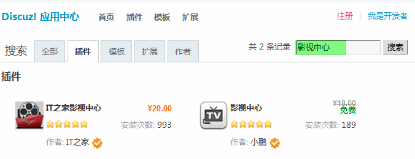

9.1. Discuz!应用中心¶
Discuz!应用中心
在很久很久以前，站长们想装个插件，装个模板是很费力气的。首先是要去找，找到后不知道怎么装，装上后不满意卸载也很麻烦。不过，以后这种情况就会大大的改善了，因为我们的新版本中增加了 Discuz!应用中心，这个平台不但让站长们找插件，安装插件变得非常轻松，而且也给广大的插件开发者提供了更广阔的空间。下面我们来详细的看看。
“应用”包括了插件、模板、扩展三种类型。平台会推荐最新的，最热们的插件或者模板，用户看了喜欢只要轻轻一点就能完成安装过程。
如果你不喜欢平台推荐的应用，你还可以通过搜索来找到自己喜欢的，同样只需轻轻一点，就可以把应用装到自己的站点上，太方便了！
应用场景
“寻找好插件”一直是站长们最大的苦恼之一，要么找人开发插件，费用不菲；要么自己去官网搜索，就像大海捞针；好不容易寻找到自己需要的插件了，安装、使用还容易出错。
设计理念
Discuz! 应用中心集中展示了优秀的插件和模板，方便站长寻找和安装。插件、模板作者也可以上传自己的作品。
用户需求
站长们希望装插件、装模板能够更加方便，广大的插件开发者和模板作者也需要更广阔的发展机会。站长们需要一个开放的平台，里面有最新、最热门的插件或者模板，站长看了喜欢只要轻轻一点就能完成安装过程。开发者也能上传自己的作品，设置是免费发布或者是收费发布，如果设置自己的应用为收费，那么站长安装该应用的时候是需要付费给开发者的。
功能使用
一、安装插件
在 Discuz! 应用中心的首页可以看到系统为您推荐的插件、最新插件和插什排行，您可以不用搜索直接选择这里的插件进行安装，如果首页没有您想要的插件，可以直接在全部插件里进行搜索，这里列出了全部插件和可以更新的插件。
在搜索框输入您要安装的插件名称，即可
搜索到该插件后，可以看到该插件的详细信息，包括：更新时间、插件作者、适用版本、插件介绍等，您可以点击该插件名称，直接安装。

这里有插件的详细说明和插件截图演示。
点击“安装”即可安装成功。
如果是收费插件，需要您购买后才可以进行安装。
安装成功后，提示如下:
启用该插件就可以使用了。
二、对插件进行评分
当你装好插件，用了一段时间，总会有一些感触的。平台还为你提供了对应用发表评论，打分评价等功能，可以直接对该插件进行评分。
三、安装模板
和安装插件的方法是相同的，在全部模板里搜索您想安装的模板，或者您不知道想安装哪个模板，可以在全部模板列表中进行浏览，找到喜欢的模板，直接点击即可安装。
选择喜欢的模板，点击“安装”即可安装成功。
五、扩展
除了插件和模块外，系统还提供了丰富多彩的扩展应用来满足您的需求。
安装方法同插件的安装是相同的。
Discuz! 应用中心不但让站长们装插件，装模板变得方便，也给广大的插件开发者和模板作者提供了广阔的机会。 在 Discuz! 应用中心的开发者平台里，开发者上传自己的作品，设置是免费发布或者是收费发布。 如果设置自己的应用为收费，那么站长安装该应用的时候是需要付费给开发者的。
综上所述，Discuz!应用中心 让站长更快更方便的装插件模板，让插件和模板的开发者更轻松地发布自己的作品。 大家好才是真的好。